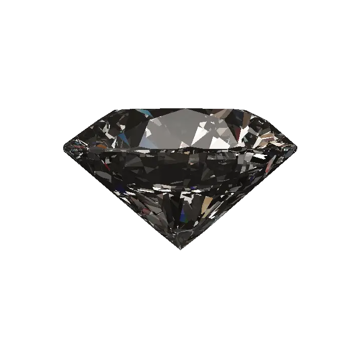
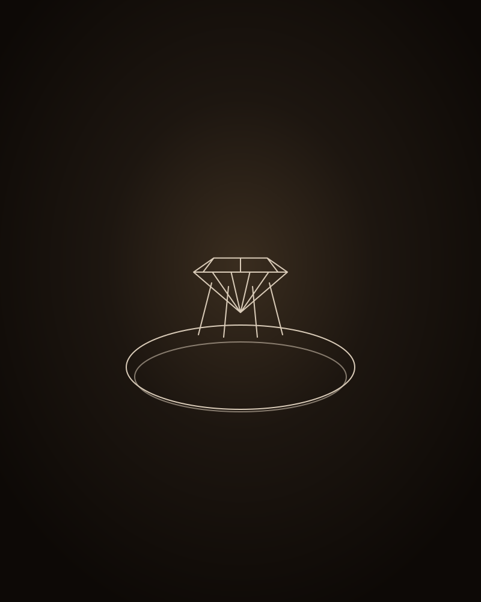
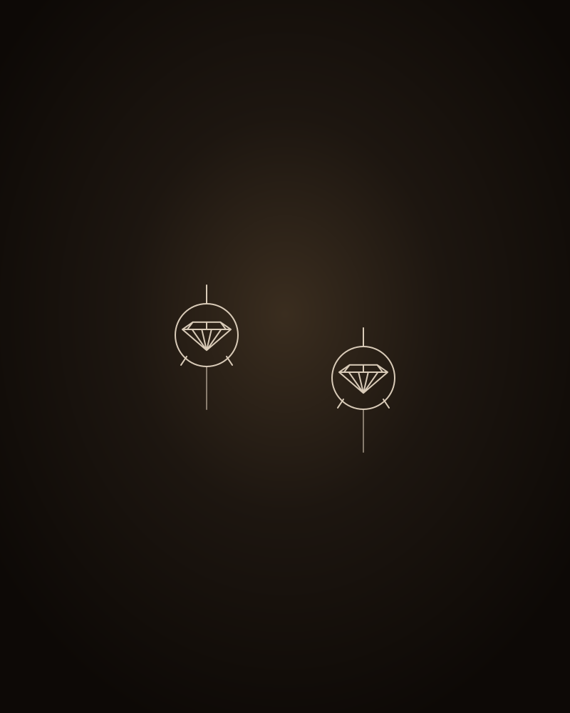
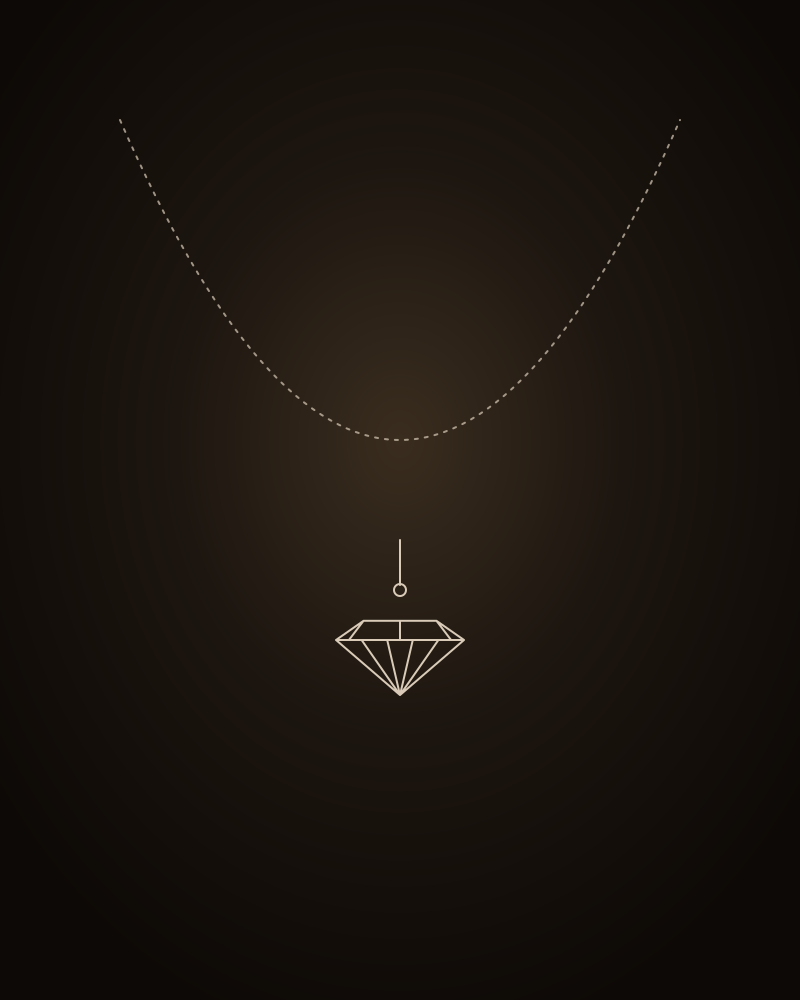

Alta joalheria · ateliê de lapidação
Vésper, alta joalheria
Diamantes de lapidação brilhante, escolhidos um a um e montados sob encomenda.
Mova o cursor: a única luz desta página é a sua.

A lapidação
Cinquenta e sete facetas. Uma luz.
Um diamante não brilha sozinho: ele devolve a luz que recebe. A lapidação decide quanto dela volta para os seus olhos.
-
01
Mesa
A janela de cima, por onde a luz entra. Larga demais, a pedra perde fogo; estreita demais, perde brilho.
cerca de 57% do diâmetro
-
02
Coroa
Trinta e três facetas acima da cintura. É nelas que a luz se divide em cores: o fogo do diamante.
34,5° de inclinação
-
03
Pavilhão
Vinte e quatro facetas embaixo, inclinadas como espelhos: a luz que entrou pela mesa bate nelas e volta para cima.
40,75° de inclinação
As peças
Três peças, uma pedra por vez.
Cada peça é feita sob encomenda em volta de uma pedra que você escolhe no ateliê. O valor depende da pedra e é apresentado na visita.
-

I Solitário
Anel em platina 950, quatro garras. A pedra fica alta, para receber luz por todos os lados.
-

II Pontos de luz
Brincos em ouro branco 18k, um diamante em cada orelha, garras de três pontas.
-

III Vésper
Pingente em ouro branco 18k. Um diamante suspenso numa corrente fina, sem moldura entre a pedra e a luz.
Escolha a pedra sob a mesma luz.
No ateliê, as pedras são mostradas uma a uma, sob uma única luz, como nesta página. A visita é marcada com hora.